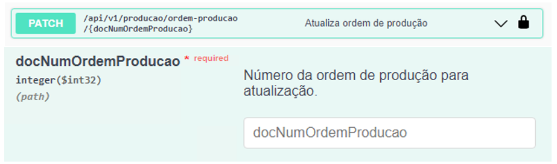

Atualização de Ordens de Produção
Este endpoint permite realizar a atualização dos campos editáveis nas ordens de produção, importante ressaltar que a API realiza as mesmas validações que o addon, portanto, há campos que são possíveis editar apenas quando a OP está com o status ‘Planejado’ e há campos editáveis apenas com OP possuindo status ‘Liberado’.
Para realizar a atualização dos campos da OP, o usuário deve informar o campo ‘docNumOrdemProducao’, que indica qual OP terá os campos atualizados, e informar no JSON quais campos serão atualizados.
{kind=link}
Atualizar OP
{
"quantidadePlanejada": 0,
"codigoDeposito": "",
"calculoManual": true,
"dataVencimento": "2024-11-14",
"programacao": "",
"permitirEdicaoAposLiberacao": true,
"calculoBaseAlternativo": true,
"fichaQualidade": "",
"destinoQualidade": "",
"codigoProjeto": "",
"codigoRegraDistribuicao": "",
"observacoes": "",
"roteiro": {
"codigoRoteiro": "",
"removerVinculoDocumento": true
},
"conteudo": [
{
"lineId": 0,
"modeloAnalise": "",
"desconsiderarLeadTime": true,
"dataInicio": "2024-11-14",
"horaInicio": 0,
"dataTermino": "2024-11-14",
"horaTermino": 0,
"observacao": "",
"observacao2": "",
"linhasOperacao": [
{
"lineId": 0,
"codigoRecurso": "",
"quantidadeBase": 0,
"quantidadeFixa": 0,
"quantidadePlanejada": 0,
"tempoFixo": 0,
"tempoVariavel": 0,
"tempoPlanejado": 0,
"dimensao1": 0,
"dimensao2": 0,
"depositoComponente": "",
"metodoBaixa": "",
"dataInicio": "2024-11-14",
"horaInicio": 0,
"dataTermino": "2024-11-14",
"horaTermino": 0,
"observacao": "",
"observacao2": "",
"cancelado": true,
"percentualPerda": 0
}
]
}
],
"subProduto": [
{
"lineId": 0,
"codigoItem": "",
"codigoDeposito": "",
"percentualCusto": 0,
"unidadeMedida": ""
}
],
"documentosCompra": [
{
"lineId": 0,
"quantidadeAlocada": 0,
"numeroDocumento": 0,
"tipoDocumento": 1
}
],
"documentosVenda": [
{
"lineId": 0,
"quantidadeAlocada": 0
}
]
}
Segue abaixo, um exemplo de JSON enviado para atualizar uma OP com status ‘Planejado’:
Atualizar OP
{
"quantidadePlanejada": 0,
"codigoDeposito": "",
"calculoManual": true,
"dataVencimento": "2024-11-14",
"permitirEdicaoAposLiberacao": true,
"calculoBaseAlternativo": true,
"fichaQualidade": "",
"destinoQualidade": "",
"roteiro": {
"codigoRoteiro": "",
"removerVinculoDocumento": true
},
"conteudo": [
{
"lineId": 1,
"modeloAnalise": "0000002",
"desconsiderarLeadTime": true,
"linhasOperacao": [
{
"lineId": 2,
"codigoRecurso": "GRAPI",
"quantidadeBase": 1,
"quantidadeFixa": 10,
"tempoFixo": 10,
"tempoVariavel": 2,
"observacao": "Recurso tipo máquina"
},
{
"lineId": 3,
"codigoRecurso": "item_nenhum",
"quantidadeBase": 10,
"quantidadeFixa": 2,
"depositoComponente": "01",
"metodoBaixa": "M"
}
]
}
],
"subProduto": [
{
"lineId": 1,
"codigoItem": "ADIMIX",
"codigoDeposito": "01",
"percentualCusto": 5,
"unidadeMedida": "UN"
}
]
}